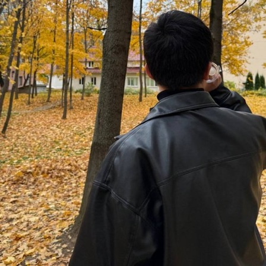

MyZay
Аркада о спасении зайцев: игрок управляет лодкой деда Мазая и подбирает тонущих зайцев.
Роль: работа над проектом в составе команды и участие в питчинге — защите проекта.

| Агентство веб-разработки и геймдеваФаундер | Запустил с нуля два небольших агентства: веб-разработка сайтов под ключ и аутсорс геймдева для западных заказчиков (development, 3D, audio, co-development, full-cycle). Сформировал услуги и позиционирование, веду переговоры с клиентами, распределяю задачи между специалистами, выстроил внутренние процессы и документацию. Выполнен проект по аудиту игры и команды заказчика; общее портфолио команды подтолкнуло к выходу в Unity Asset Store. |
| Компьютерный клубСовладелец | Выкупил клуб для перестройки и роста выручки. Оценил сделку до покупки, сформировал план перезапуска: новое позиционирование, тарифы, зонирование и операционная модель. Управлял ремонтом и редизайном — бюджет, сроки, объём работ, риски. Перевёл управление на показатели, отчётность и бюджетирование; клуб работает в плюс. |
| Геймдев-студияProject manager, продюсер | Удалённо руководил кросс-функциональной геймдев-командой из 5 человек в штате и 1 на аутсорсе. Выстроил систему работы и коммуникации: Agile, устав студии, таск-трекер, one-to-one и митинги; составлял ТЗ, бэклоги и roadmap роста для каждого сотрудника. Отвечал за найм, онбординг и менторство. Довёл проект до финала, несмотря на срыв сроков и замену ключевого сотрудника. |
| Лаунж-бар во ВьетнамеСтарший менеджер | Управление всеми операционными процессами, переговоры на английском, стратегия заведения на сезон, эвенты на 20+ гостей. Пересмотрел условия с 3 ключевыми поставщиками и сэкономил 12% бюджета за год; запустил ребрендинг меню на 2 недели раньше плана. |
| Магазин стритвир-одеждыОснователь, операционный менеджер | B2C-продажа редкой одежды из Южной Кореи, команда из 4 человек. Выстроил с нуля полный цикл: поставщики, логистика, продажи, маркетинг, клиентский сервис. Более 50 продаж, успешный питч ключевому инвестору, сообщество вокруг бренда. |
| Управление проектами | Scrum, Agile, управление бэклогом, ТЗ и декомпозиция задач, roadmap, контроль сроков, бюджета и объёма работ |
| Команда | Найм и онбординг, наставничество, делегирование, управление конфликтами, one-to-one |
| Продукт и бизнес | Продюсирование, разработка стратегии развития, кастдев, риск-менеджмент, бюджетирование, переговоры и питчинг |
| ИИ-инструменты | Claude, GPT |
| Языки | Русский — родной, английский — C1 |
«Помогать другим подниматься — это лучший способ подняться самому».
Букер Т. Вашингтон
| Процессы | Постоянно ищу, что можно оптимизировать вокруг себя |
| Решения | Принимаю решения смело и не оставляю места неопределённости |
| Команда | Делегирую с расчётом рисков; с каждым ищу его точки роста и болевые места |
| Ценности | Смелость, репутация и свежий взгляд |